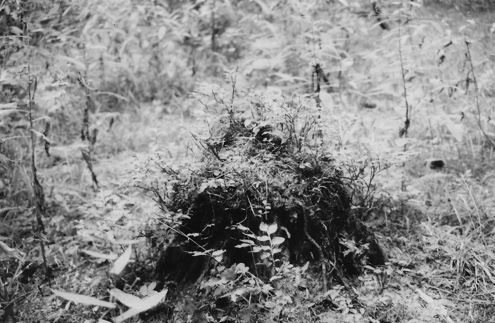
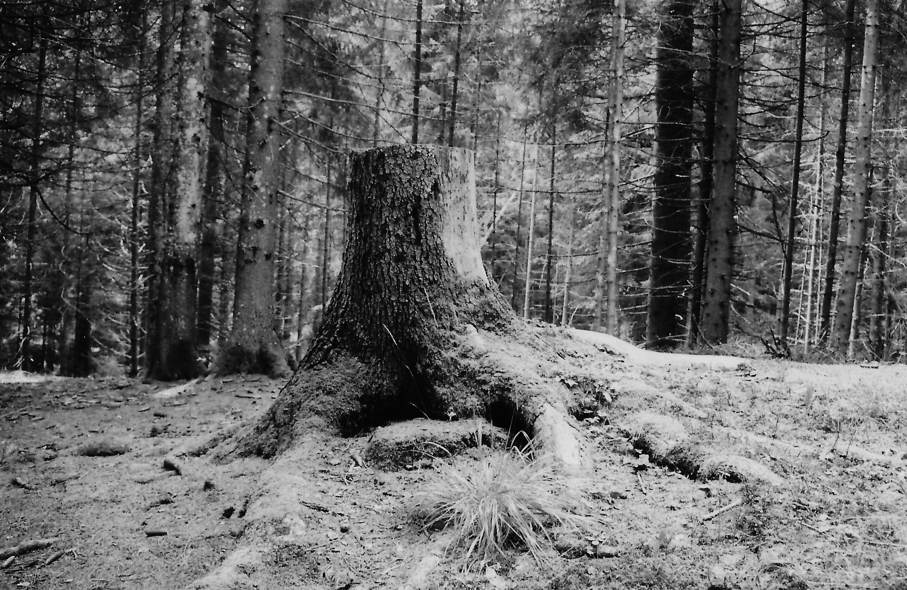
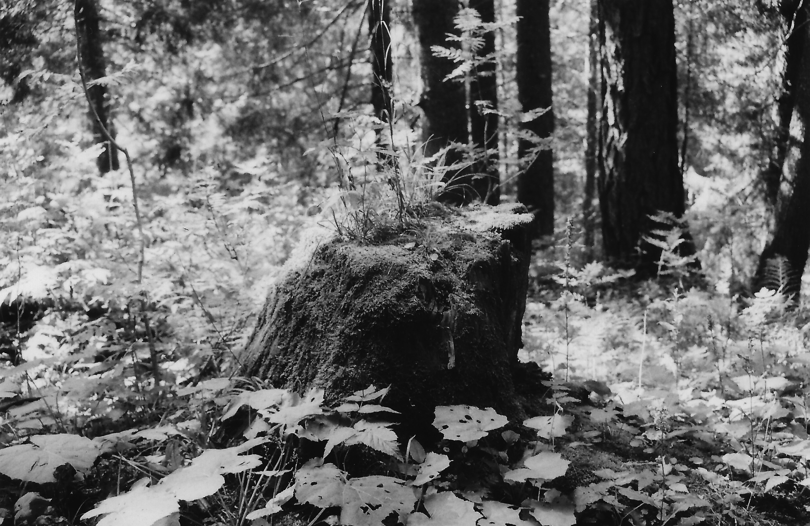
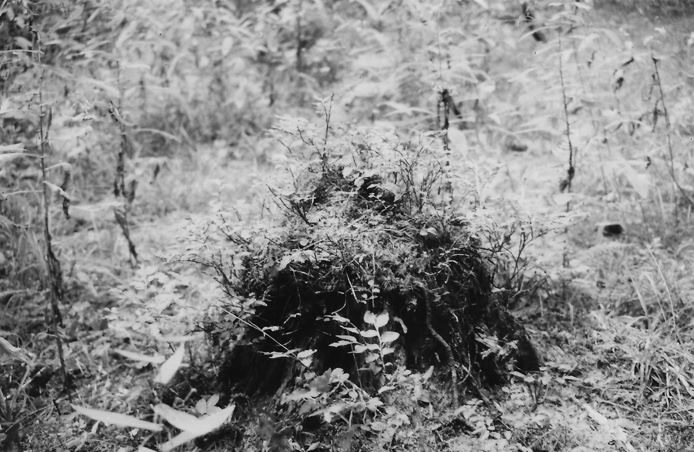
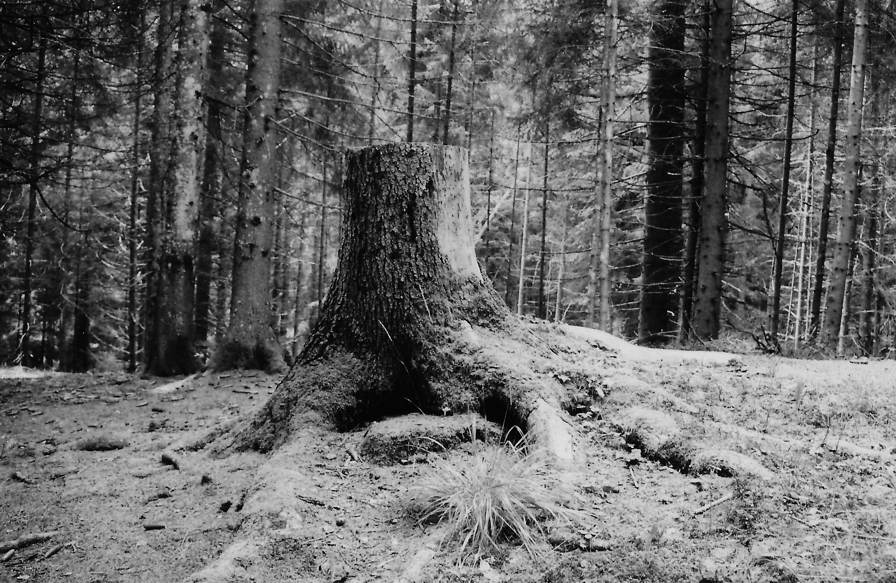
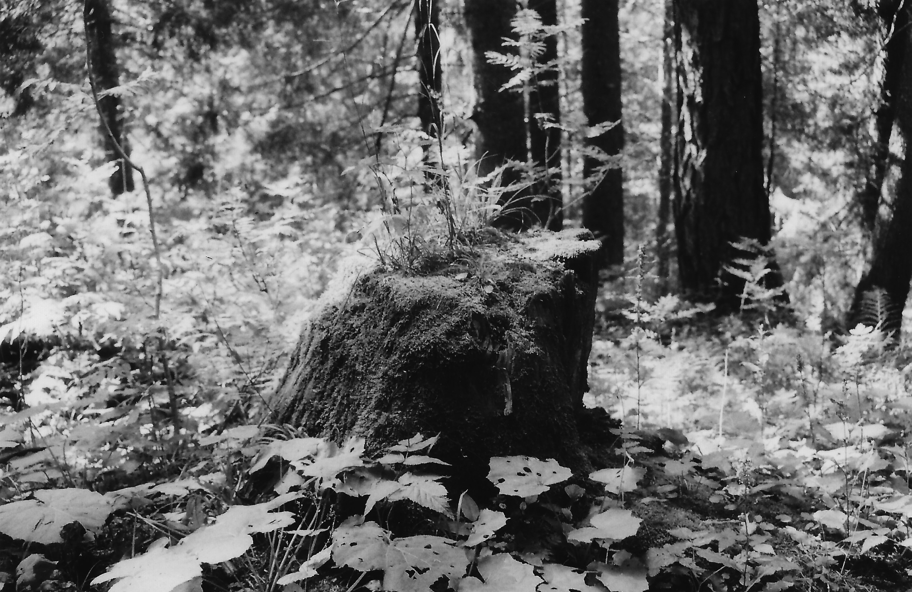

Ce qui demeure en terre
Je photographie les souches d’arbres sur mon passage, les symboles de ce qui demeure en terre, témoins des arbres abattus et des généalogies tronquées. Des souches qui gardent la mémoire et qui constituent le terreau fertile d’une nouvelle matière organique.
La souche appartient aussi au folklore pyrénéen, elle est choisie des mois avant le solstice d’hiver, et devait brûler des jours durant, à compter du 21 décembre. Au creux de l'hiver, la souche d’arbre devenait l’élément central du feu clanique, opposé au feu collectif du solstice d’été.
On coupe un arbre, des rejets y poussent, du lichens et de la mousse. Des mois plus tard, on se retrouve pour consumer ce qui reste et célébrer ensemble les jours qui rallongent. D’une coupe on se retrouve.
 




